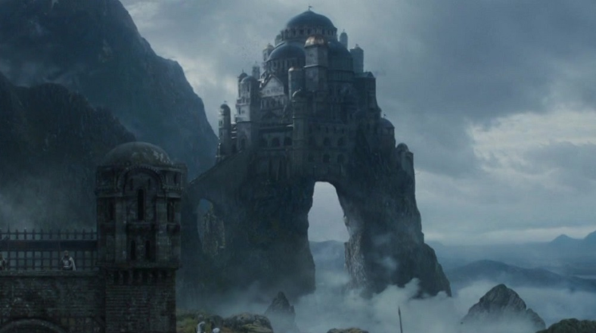
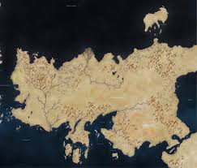
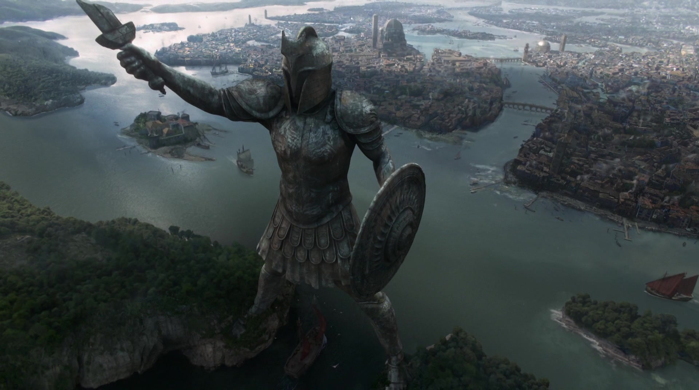
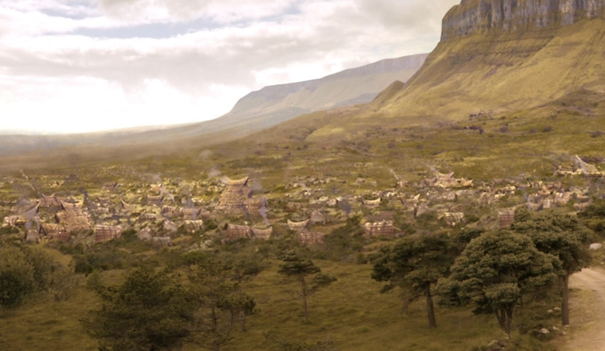

Westeros
Westeros ist ein großer Kontinent im äußersten Westen der bekannten Welt. Er wird durch die Meerenge vom im Osten liegenden Kontinent Essos getrennt. Beinahe der gesamte Kontinent, abgesehen von den Ländereien jenseits der Mauer, gehören in ihrer Gesamtheit zu den Sieben Königslanden, über die der König auf dem Eisernen Thron in Königsmund herrscht. Die Begriffe "Sieben Königslande" und "Westeros" werden normalerweise synonym verwendet.
Altsass
Altsass ist die zweitgrößte Stadt der Sieben Königslande und mit Abstand die älteste. Sie stammt aus einer Zeit vor der Invasion der Andalen. Demnach ist sie mindestens 6.000 Jahre alt. Bis zum Bau der Großen Septe von Baelor war Altsass auch das religiöse Zentrum des Glaubens an die Sieben. Heute herrscht das Haus Hohenturm, Vasallen der Tyrells, über die Stadt.
Altsass liegt an der Mündung des Flusses Honigwein im äußeren Südwesten von Westeros.
Casterlystein
 Casterlystein ist der uralte Stammsitz des Hauses Lennister. Die Burg liegt an der Westküste von Westeros und wurde in eine natürliche Felsformation hineingebaut, an deren südlichen Ausläufern befindet sich Lennishort, die größte Stadt der Westlande.
Casterlystein ist der uralte Stammsitz des Hauses Lennister. Die Burg liegt an der Westküste von Westeros und wurde in eine natürliche Felsformation hineingebaut, an deren südlichen Ausläufern befindet sich Lennishort, die größte Stadt der Westlande.
Unter Casterlystein befindet sich eine ergiebige Goldmine, eine der produktivsten im Reich und Grundlage für den sagenhaften Reichtum der Lennisters. Diese Goldmine ist allerdings inzwischen versiegt, weshalb das Haus Lennister hohe Schulden bei der Eisernen Bank von Braavos hat. Durch ihre Lage auf einem steilen Felshügel gilt Casterlystein in ganz Westeros als uneinnehmbare Festung, die in ihrer Größe und Stärke nur von Harrenhal übertroffen wird.
Drachenstein
Die Burg Drachenstein befindet sich auf der gleichnamigen Insel, Drachenstein, in der Schwarzwasserbucht, an der Ostküste von Westeros, nahe Königsmund. Es ist der Stammsitz des Hauses Targaryen und war die Hochburg des Hauses Baratheon von Drachenstein, das Anspruch auf den Eisernen Thron erhob.
König Robert Baratheon übergab die Burg nach seinem Sieg über die Targaryen an seinen Bruder Stannis Baratheon. Die in Westeros einzigartige Bauweise wurde mit Hilfe längst verloren gegangener valyrischer Steinmetzarbeit errichtet und kennzeichnet sich durch den verwendeten Werkstoff Drachenstein aus. Es dominieren exotische Drachenmotive, die in Reliefs und Statuen verewigt wurden. Zudem befindet sich in der Burg die Kammer der Bemalten Tafel.
Durch seine strategisch wichtige und isolierte Lage, sowie die starken Verteidigungsanlagen, ist Drachenstein so gut wie uneinnehmbar und eignet sich deshalb hervorragend als Rückzugsort und Zuflucht - wie einst für die Targaryen und im Krieg der Fünf Könige für König Stannis. Nach der Landung Daenerys Targaryens in Westeros, ist Drachenstein wieder im Besitz des Hauses Targaryen.
Harrenhall
Harrenhall ist eine gewaltige Burg, die größte in ganz Westeros, aber auch die unheilvollste. Sie liegt am nördlichen Ufer des Sees Götterauge, im Herzen der Flusslande, südlich des Flusses Trident und nordwestlich von Königsmund.
Der Großvater von Harren dem Schwarzen eroberte mit den Eisenmännern die Flusslande, die zuvor von den Sturmkönigen unterworfen und okkupiert wurden. Die Eisenmänner scherten sich nicht um die Bewohner des Festlandes und ihre Herrschaft war brutal und tyrannisch, weit mehr als die der früheren Besatzer. Um den Einfluss auf die Flusslande zu festigen, gab Harrens Großvater den Bau einer Festungen am Nordufer von Götterauge in Auftrag, im Herzen der Region. Es war die größte Festung, die jemals in Westeros errichtet wurde und ihre Fertigstellung überdauerte drei Generationen. Die Eisenmänner brachen den Widerstand der einheimischen Bevölkerung, indem sie zur Zwangsarbeit herangezogen wurde. Das Bauwerk wurde schließlich zur Zeit von König Harren vollendet, der sie arrogant "Harrenhal" nannte, in Anlehnung an sich selbst. Am selben Tag, an dem der letzte Stein gesetzt worden war, landeten jedoch Aegon Targaryen und seine beiden Schwestern an der Mündung des Flusses Schwarzwasser mit einer Armee und ihren drei Drachen. Die Eroberungskriege hatten damit begonnen.
Harren glaubte, dass die massiven Mauern seiner Festung jedem Angriff standhalten würden, aber er dachte nicht daran, dass Drachen einfach darüber hinweg fliegen konnten. Auf diese Weise erfolgte der Angriff von Aegon, dessen Drache Balerion die Festung im Überflug in Brand steckte, wobei Harren und seine Söhne lebendig in ihrem Turm verbrannt wurden. Das Feuer war so stark, dass der Felsen schmolz und Harrenhal zu einer imposanten, aber deformierten Ruine formte. Danach wurde die Festung von Aegon an einem Vasallen, dem Haus Qoherys übergeben, das schließlich ausstarb. Ihm folgten die Häuser Towers, Harroway, Kraft und Widersten. Jedes dieser Häuser starb am Ende aus, weswegen Harrenhal als verflucht gilt. Es ranken sich deshalb auch zahlreiche Legenden um die Festung und seine Bewohner, wie die Geschichte der verrückten Lady Widersten, die brennenden Geister von Harren und seinen Söhnen und von Bediensteten, die schlafen gingen und von denen am nächsten Tag nur Asche gefunden wurde.
Hohenehr

Hohenehr, auch die Ehr genannt, ist der uralte Stammsitz des Hauses Arryn. Sie liegt im Tal von Arryn.
Hohenehr thront mehrere tausend Meter über dem Erdboden auf der Spitze eines Mondberges. Hohenehr ist ausschließlich über einen engen Pass und eine Brücke zu erreichen.
Die Hohe Halle ist das Herz der Burg, hier empfängt der Lord die Besucher und sitzt dabei auf einem Thron aus Wehrholz auf einer erhöhten Plattform. Eine Bemerkenswerte Eigenart dieser Halle ist das "Mondtor", ein Durchlass im Boden der Halle, mit Blick auf das darunter liegende Tal. Es dient als bevorzugte Hinrichtungsmethode in Hohenehr, indem Menschen in den sicheren Tod gestürzt werden.
Ein weitere Besonderheit der Burg sind die "Himmelszellen", die auf der einer Seite geöffnet sind und deren Boden uneben und abfallend zur Öffnung verlaufen. Gefangene müssen darauf achten, dass sie nicht versehentlich im Schlaf über die Kante geraten.
Königsmund
 Königsmund ist die Hauptstadt der Sieben Königslande. Sie liegt an der Ostküste von Westeros in den Kronlanden, mit Blick auf die Schwarzwasserbucht. Innerhalb der Stadt befinden sich der Rote Bergfried und darin der Eiserne Thron, der Sitz des Königs. Die Stadtmauer liegt auf einer Anhöhe, dort wo der Fluss Schwarzwasser in die Bucht fließt.
Königsmund ist die Hauptstadt der Sieben Königslande. Sie liegt an der Ostküste von Westeros in den Kronlanden, mit Blick auf die Schwarzwasserbucht. Innerhalb der Stadt befinden sich der Rote Bergfried und darin der Eiserne Thron, der Sitz des Königs. Die Stadtmauer liegt auf einer Anhöhe, dort wo der Fluss Schwarzwasser in die Bucht fließt.
Königsmund ist die größte Stadt in Westeros mit einer Bevölkerung von geschätzt etwa einer Million Einwohnern. Allerdings ist sie weniger wirtschaftlich, als die fast gleich große Stadt Altsass in der Weite. Die vollständig ummauerte Stadt befindet sich im Hochland, inmitten der Kronlande, nördlich der Mündung des Schwarzwasserstroms in die Schwarzwasserbucht. Die Targaryens erbauten die Stadt so, dass sie einer Belagerung standhält und erbauten ebenso ca. 50 Meilen Tunnel unterhalb der Stadt, um die Stadt notgedrungen zu versorgen oder zu flüchten. Während der Regierungszeit Aerys II. wurde in diesen Tunnel und Gewölbe massenhaft Seefeur gelagert, um im Notfall die Stadt zu sprengen. Der Sprengungsbefehl wurde jedoch nie erteilt. Da niemand die genauen Ausnmaße der Tunnel kennt, ist das Wissen um das dortige Seefeuer ebenso rah gesät. Die Stadt ist auf drei großen Hügeln erbaut. Aegons Hoher Hügel mit dem Roten Bergfried, Visenyas' Hügel mit der Großen Septe von Baelor und Rhaenys' Hügel mit der Drachengrube.
Die Hauptstadt profitiert von einem warmen Klima und bietet Luxus alldenjenigen, die es sich leisten können, während das gemeine Volk in ärmeren Stadtteilen lebt, wie etwa Flohloch. Zudem ist die Stadt überbevölkert und gefährlich trotz einer bestehenden Stadtwache. Es gilt als allgemein bekannt, dass man den Gestank Königsmunds noch meilenweit entfernt riechen könne.
Schnellwasser
Schnellwasser ist der ehemalige Sitz des Hauses Tully, die ihren Anspruch durch Missachtung des Eisernen Throns verwirkten. Nach ihnen wurde das Haus Frey als rechtmäßige Herrscher eingesetzt. Es ist eine große Burg, die im Westen der Flusslande liegt. Es befindet sich an der Stelle, wo der Rote Arm des Trident mit dem Trommelstein zusammenfließt, die zwei Seiten eines Dreiecks bilden.
Bei Gefahr lassen sich Schleusentore öffnen, wodurch ein Kanal geschaffen wird, der die Burg im Westen schützt und Schnellwasser in eine Inselfestung verwandelt. Seine Mauern scheinen aus dem Wasser empor zu ragen und die Türme kontrollieren das gegenüberliegende Ufer, was eine Eroberung erheblich erschwert.
Schwarze Festung
 Die Schwarze Festung ist das Hauptquartier und Befestigung der Nachtwache. Sie befindet sich ungefähr an der halben Weglänge der Mauer, an deren südlichen Seite, am nördlichen Ende vom Königsweg. Sie ist ein dunkles und kaltes Zuhause für ihre Garnison.
Die Schwarze Festung ist das Hauptquartier und Befestigung der Nachtwache. Sie befindet sich ungefähr an der halben Weglänge der Mauer, an deren südlichen Seite, am nördlichen Ende vom Königsweg. Sie ist ein dunkles und kaltes Zuhause für ihre Garnison.
Sie ist eine der drei letzten bemannten Festungen entlang der Mauer, die anderen sind Ostwacht an der See und der Schattenturm. Insgesamt gibt es neunzehn Befestigungen, doch im Laufe der Jahrhunderte musste die schwindende Nachtwache sechzehn von ihnen aufgeben. Die Schwarze Festung liegt zwischen den aufgegebenen Burgen Königintor und Eichenschild.
Die Schwarze Festung hat eine Septe, aber keinen Götterhain. Die Anhänger der alten Götter des Waldes müssen eine Meile nördlich der Mauer reisen, in den Verfluchten Wald, um ihr Gelübde vor einem Herzbaum abzulegen.
Sonnspeer
Sonnspeer ist Sitz des Hauses Martell und Hauptstadt von Dorne, dem südlichsten der Sieben Königslande, im Südosten von Westeros am Sommermeer gelegen. Sie besteht aus einer starken und mächtigen Burg, sowie einer Stadt, die sich darum erstreckt. Das größte Bauwerk ist der Speerturm mit einer Höhe von 150 Fuß und an der Spitze mit glänzenden Stahl geschmückt.
Sonnspeer liegt im tiefen Osten der Dornischen Halbinsel, wenige Kilometer von der Mündung des Flusses "Grünblut" entfernt. Einen Steinwurf nördlich der Stadt findet sich eine Hügellandschaft, im Osten und Süden der Stadt das Meer.
Winterfell
Die Burg Winterfell ist der alte und eindrucksvolle Sitz des Hauses Stark. Im Allgemeinen gilt die Festung (besonders im Winter) als sehr schwer bis unmöglich einzunehmen. Im Zentrum des Nordens gelegen, einer Region der Sieben Königslande, ist es die Hauptfestung des Nordens. Von hier aus herrschten die Oberhäupter des Hauses Stark zuerst als Könige und dann als Lords über die Nordmänner.
In seinen Mauern befindet sich ein kleiner Götterhain. Der Königsweg führt an Winterfell vorbei. Die Burg wurde auf heißen Quellen errichtet, welche sie sogar in den furchtbarsten Wintern warm halten. In den Katakomben unterhalb der Burg befindet sich die Familiengruft der Starks, deren Geschichte Jahrtausende zurückreicht, ebenso lange wie Winterfell existiert. Vor den Mauern, im Schatten der Burg befindet sich das Winterdorf.
Zwillinge
Die Zwillinge, gelegentlich der Kreuzweg genannt, ist weniger eine Burg, als eher eine massive Brücke mit stark befestigten Brückenköpfen, in den Flusslanden. Es ist der Sitz des Hauses Frey, einem Vasall des Hauses Tully von Schnellwasser. Es liegt mitten in den Flusslanden. Es besteht aus zwei nahezu identische Türmen und einer befestigten Brücke dazwischen, die über den Grünen Arm des Flusses Trident verläuft.
Die Zwillinge sind der einzige Übergang über den Grünen Arm, für Hunderte von Kilometern in jeder Richtung. Es stellt ein großes Hindernis für Reisende und Kaufleute dar, die aus dem Norden die westlichen Flusslande erreichen wollen. Sie liegt direkt an der Hauptroute von Winterfell nach Schnellwasser. Eine Umgehung der Zwillinge erfordert eine aufwendige Reise nach Süden oder einen gefährlichen Marsch durch die Moore und Sümpfe der Eng im Norden. Reisende, die in den Süden wollen und dabei nicht die Zwillinge passieren können, müssen den Königsweg südöstlich passieren. Deshalb werden die Zwillinge auch als der Kreuzweg bezeichnet.
Essos

Essos ist eine gewaltige Landmasse östlich von Westeros, die bis in den Fernen Osten der bekannten Welt reicht. Essos und Westeros werden durch die Meerenge voneinander getrennt, nur eine als Trittsteine bekannte Inselkette liegt zwischen ihnen.
Die Freien Städte befinden sich an der Nordwestküste von Essos, das Dothrakische Meer im ausgedehnten Inland und die Städte der Sklavenbucht an der Südküste. Der Kontinent reicht bis weit in den Osten, an das Jademeer bis zu den entfernten und sagenhaften Asshai und den Schattenländern. Das Klima von Essos ist im Norden und Westen gemäßigt und subtropisch im Süden und Osten. Das östliche Ende des Kontinents ist nicht vollständig kartographiert.
Braavos

Braavos ist ein Stadtstaat im nordwestlichen Essos und eine der neun Freien Städte. Sie ist östlich von Westeros gelegen, jenseits der Meerenge an der Westküste, dort, wo das Zitternde Meer und die Meerenge aufeinandertreffen. Mit ihren berühmten "einhundert Inseln" ist sie die nördlichste, reichste und möglicherweise mächtigste der Freien Städte. Die Stadt erstreckt sich über mehrere kleinere Inseln, die durch kleine Steinbrücken miteinander verbunden sind. Der Stadtstaat und seine Herrscher kontrollieren die umliegenden Lagunen und einen Küstenstreifen südwärts nach Pentos. Eine gewaltige Statue, die der Titan von Braavos genannt wird, wacht über die Hafeneinfahrt zur Lagune und ist das Wahrzeichen der Stadt.
Menschen aus Braavos werden Braavosi genannt. Sie sind bewunderte Seefahrer und Schwertmeister. Ihre Handelsschiffe segeln in viele entfernte Regionen und bringen durch Handel einen gewissen Wohlstand ein. Die Stadt ist Sitz der Eisernen Bank von Braavos, die sogar an die Sieben Königreiche Kredite vergibt.
Im Gegensatz zum Adel in den Sieben Königslanden bevorzugen wohlhabende und mächtige Braavosi dunkle Kleidung.
Meereen
Meereen ist die nördlichste der drei großen Städte der Sklavenbucht. Sie ist die größte der Sklavenhändler-Städte und wird von den reichsten Bürgern von den großen Stufenpyramiden aus regiert, für welche die Stadt bekannt ist. Meereen liegt an der Nordostküste der Sklavenbucht an der Mündung des Flusses Skahazadhan, welcher entlang der Grenze zwischen Sklavenbucht und Roter Wüste bis in die tiefen Sandsteingebirge im Osten fließt.
Nördlich der Stadt gelangt man durch den nahe gelegenen Khyzai-Pass relativ schnell ins Land der Lhazar, welches an das dothrakische Meer grenzt. In Meereen werden die Sklaven verkauft und zu verschiedenen Zwecken eingesetzt, z. B. als Wachen, Gladiatoren, Bettsklaven oder einfache Diener. In den Schwesterstädten Astapor und Yunkai hingegen werden spezialisierte Sklaven angeboten.
Pentos
Pentos ist eine an der Westküste von Essos gelegene Hafenstadt, welche zu den Freien Städten gehört.
Pentos liegt vor einer Bucht vor der Meerenge, umgeben von Brachland mit Hügeln im Osten. Früher war sie lediglich eine valyrische Kolonie. Doch mit dem Zusammenbruch des Reiches wurde sie unabhängig und erblühte. Heute ist sie eine der bevölkerungsreichsten Städte Essos und wahrscheinlich sogar die bevölkerungsreichste der Freien Städte.
Die Bevölkerung ist kreativ und liebt Kunst und Musik.
Qarth
 Qarth liegt direkt an der Meerenge und verbindet das Sommermeer im Westen mit dem Jademeer im Osten. Händler und Reisende von den Sommerinseln, aus Westeros oder der Sklavenbucht müssen an der Stadt vorbei, wenn sie in die Handelsstädte des Jademeers wollen. Es wird es regelmäßig von Händlern aus Yi Ti und Asshai besucht und ist damit ein Knotenpunkt für Handel zwischen dem Westen und Osten, und Waren wie Seide und Gewürze.
Qarth liegt direkt an der Meerenge und verbindet das Sommermeer im Westen mit dem Jademeer im Osten. Händler und Reisende von den Sommerinseln, aus Westeros oder der Sklavenbucht müssen an der Stadt vorbei, wenn sie in die Handelsstädte des Jademeers wollen. Es wird es regelmäßig von Händlern aus Yi Ti und Asshai besucht und ist damit ein Knotenpunkt für Handel zwischen dem Westen und Osten, und Waren wie Seide und Gewürze.
Im Norden und Westen der Stadt befindet sich die Rote Wüste. Da die Stadt starke Mauern und Tore besitzt, ist es einer von der Roten Wüste geschwächten Armee unmöglich, in Qarth einzudringen. Die Bewohner sind dafür bekannt, Reisende aus der Roten Wüste, welche ihnen nicht gefallen, abzuweisen und zurückzuschicken. Aufgrund der Größe und Unerbittlichkeit der Wüste kommt dies einem Todesurteil gleich und schon viele starben deswegen. Deshalb nennt man das Gebiet vor der Stadt Garten der Knochen.
Vaes Dothrak
 Vaes Dothrak befindet sich an der nordöstlichsten Grenze des Dothrakischen Meeres und liegt im Schatten eines gewaltigen Berggipfels, der als Mutter aller Berge bezeichnet wird. Die Stadt ist ein Ort des Friedens, wohin sich die Dothraki-Khalasare zurückziehen können, um zu handeln, aber nicht zu kämpfen. Deswegen sind innerhalb der Stadtgrenzen auch keine Waffen erlaubt. In der Stadt leben heilige Frauen, die Dosh Khaleen, die von allen Dothraki respektiert und zu Rate gezogen werden.
Valyria
Valyria war einst die bedeutende Hauptstadt des gleichnamigen Freistaates, einer großen Zivilisation auf dem Kontinent Essos. Die Hauptstadt Valyria befindet sich südöstlich der Freien Städte auf der Valyrischen Halbinsel, welche sich nach Süden ins Sommermeer ausbreitet. Nach seinem Untergang wird die Stadt gemeinhin als "Altes Valyria" bezeichnet.
Die Macht von Valyria gründete in der Zähmung und Verwendung von Drachen für die Kriegsführung, welche sie in einer Ansammlung von Vulkanen, genannt die Vierzehn Flammen, entdeckt hatten. Mit den Drachen konnten sie weit überlegene Armeen der gegnerischen Nationen vernichten und eroberten einen großen Teil des Kontinents. Das Reich, das dadurch um Valyria entstand, umfasste die heutigen Freien Städte und sogar die Insel Drachenstein auf der anderen Seite der Meerenge, ohne jemals eine Invasion von Westeros in Betracht gezogen zu haben. Im Freistaat wurden einige ungewöhnliche Bräuche praktiziert, die vom Rest der Welt geächtet wurden, darunter Inzest und Polygamie.
Die Stadt wurde vor etwa vier Jahrhunderten durch eine Naturkatastrophe vulkanischen Ursprungs zerstört, welche die gesamte Halbinsel betraf. Der Untergang, wie das Ereignis später bezeichnet wurde, löschte beinahe alle Drachen auf der Welt aus und schuf das gefürchtete Rauchende Meer. Die einzige größere Familie, die dem Untergang Valyrias entging, war das Haus Targaryen, das zu dieser Zeit auf Drachenstein lebte. Ein Jahrhundert später eroberte Aegon I. Targaryen mit den überlebenden Drachen fast den gesamten Kontinent Westeros und begründete eine Dynastie, die für beinahe drei Jahrhunderte herrschen sollte.